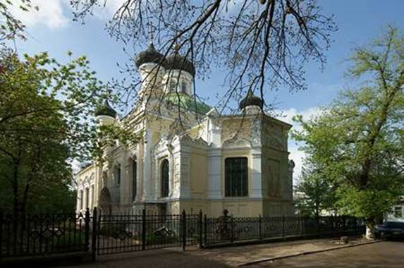

БЛУЖДАНИЯ ДУРЫНДЫ
Всё это испытал я мудростью;
Я сказал: Буду я мудрым! -
Но мудрость далека от меня.
Книга Екклесиаста. 7. 23
Бог спрашивает архангела:
«Кто эти люди,
что так шумят у ворот царствия небесного?»
Архангел узнал и сообщает: «Это атеисты, Господи».
«Ох, уж эти атеисты, - говорит Бог, - Как они мне надоели!
А, поди-ка, скажи им, что меня нет...»
Анекдот
В советское время бога не было. Нам объясняли это в школе и даже ещё раньше, в детском саду. В бога верили до революции, когда все были отсталыми и большинство малограмотными. А мы, передовые, жили в стране победившего все предрассудки социализма, в лучшей из стран, в наилучшее из времён, и верить в бога было просто смешно и нелепо. Религия - опиум для народа. Человек в рясе - не иначе как «поп», с оттенком иронии. В бога верили только бескультурные, малоразвитые старушки. И пусть их... Если они находили в этой глупости какое-то утешение. Бога нет. Всё было просто и понятно.
Существовали, правда, некие тревожащие противоречия. Например, в середине пятидесятых я отдыхала с родителями на южном берегу Крыма, в Рабочем уголке - прелестном месте, сразу за Алуштой. Каждый день на закате несколько пожилых женщин выводили к морю высокого седобородого старца в холщовой рясе. Из-под круглого головного убора на его плечи ниспадали пегие волосы. Поверх рясы был надет крест, скрепленный массивной цепью. Старец был слеп. Две женщины поддерживали его под руки, другие шли впереди и позади него. Слепой медленно шагал с невольно напряжённой, вытянутой спиной и поднятой головой. Он возвышался над спутницами и выглядел величаво и торжественно. Группа продвигалась вдоль берега моря, по обочине пыльной дороги к одному определённому обрывистому месту. Там расставляли деревянное, обшитое парусиной креслице, и старец садился лицом к морю и заходящему солнцу. Женщины размещались вокруг. Он сидел долго, молча и неподвижно. Так же, как при ходьбе, спина его была прямой, а голова высоко поднята. Сверху с пригорка мне было видно, как багровый диск солнца тает на линии горизонта, погружаясь в море. Одновременно с моря поднималась тьма. С каждым мгновением всё более густая и непроницаемая она поглощала всё вокруг. Постепенно растворялся во тьме и старец, и окружавшие его женщины. Возвращались они уже в полной темноте, когда я видеть их не могла. Родители объяснили, что этот человек - великолепный хирург, профессор медицины, архиепископ Крымский Лука Войно - Ясенецкий. Их слова вызывали недоумение: медицина не вязалась с божественным саном, крест со скальпелем, величественный облик с привычно насмешливым «поп». Но главное противоречие содержалось в том, с каким глубоким почтением отзывались о Войно - Ясенецком мои неверующие мама и папа.
Через много лет, рассматривая памятники на старом кладбище, что за центральным рынком, позади церковки я увидела могилу Войно - Ясенецкого. У подножья мраморного креста в рукотворной пещерке теплилась лампада.
***
Родители говорили на эту тему уклончиво. Жизнь вокруг была бурной и безбожной. И, за исключением редких смутных намёков, сомнения не тревожили моё пионерское сердце. Религиозные пережитки не оспаривались только в быту, ещё точнее, в кушаньях. И тут всё смешалось в нашей коммуналке. Перед еврейской пасхой (слово «песах» я узнала, уже под пятьдесят, перебравшись в Израиль) бабушка заказывала мацу. Не очень смело, не вполне открыто, «не афишируя», в замкнутой на «молнию» кошёлке мама относила кому-то муку, а взамен через неделю получала мацу. Наша семья своего еврейства никогда не стеснялась. Может быть, это было связано с довоенным национальным разноцветьем Крыма, может быть с высоким социальным статусом - и бабушка и мама были врачами: всех лечили, всем помогали. Так что бабушка заказывала мацу втихаря, стесняясь именно своей якобы религиозной отсталости. Бабушка угощала мацой соседок по коммуналке. Соседки вежливо благодарили, но маца популярностью не пользовалась. Параллельно дегустации шли разговоры, что «вот ведь как похолодало». «На еврейские кучки всегда холодает». «Ничего, скоро русская пасха - потеплеет!» Мне было чуть обидно от этих разговоров. Но - чёрт возьми! - на православную пасху, сколько помню, действительно всегда было тепло и светило солнышко.
Мои соседки беспрестанно что-то варили, жарили, пекли - каждая на свой лад. Однако приготовления к русской пасхе были особым ритуалом, пожалуй, главным в году. Они начинались задолго. Хозяйки покупали на рынке или «доставали по блату» у знакомых продавщиц вёдра яиц, сливочное масло, сахар, дрожжи. Мука должна была быть обязательно белая, в отличие от серой, второсортной. Всё было свежайшее, наилучшего качества. В этих деталях, а также в обязательности, непременности, с которой они соблюдались, таилось указание на важность предстоящего события. У каждой хозяйки был свой рецепт пасхи. У моей чистокровной еврейской бабушки в нескольких, оставленных мне в наследство, тетрадках с кулинарными рецептами, кои я бережно сохранила до своей старости и взяла с собой в Израиль, записано четыре разных рецепта. Существовали общие правила приготовления теста для пасок. Например, чем больше положить желтков, тем дольше паска не черствеет. Или яиц? Нет, всё - таки желтков. Кроме того, у каждой хозяйки был свой маленький секрет и «петушиное слово». Пасочки были разного размера. Самый ходовой выпекался в баночках из - под сгущёнки или зелёного горошка. Были размеры и побольше, и поменьше. Перед раскладкой в формочки тесто должно было «подойти», а потом, разложенное, ещё раз «подойти». В это время, и позже, во время выпекания пасок нельзя было шуметь, прыгать, стучать дверью. Многочисленным жителям коммуналки, а особенно детям, тишина, конечно, тяжело давалось. Чтобы избежать шума женщины пекли паски ночью. Я помню, как сквозь сон ощущала невероятный, особенный, сдобно - дрожжевой, ни с каким иным не сравнимый аромат пасхального кулича. Конечно, хозяйки негласно соревновались - как у кого, в результате, получится. Тело паски должно было быть густо жёлтого цвета, однородное, не рассыпчатое. Плотное и в то же время нежное. Чуть влажное, но не мокрое. И должно не черстветь, не сохнуть. Это же ТЕЛО. Так мне объяснила соседка Валентина Тимофеевна, чей вполне благополучный, единственный сын Гена внезапно повесился во время службы в рядах доблестной советской армии. «Т-Е-Л-О». В словах соседки слышалась возвышенная интонация. Вот и всё. Однако интонация Валентины Тимофеевны тревожила.
Утром в пасхальное воскресенье на каждом столе в большой общей кухне стояли по две тарелочки с угощеньем. И на нашем столе - от двух русских соседок. Выпуклый верх пасочек был старательно украшен белоснежной глазурью и разноцветным пшеном. Вокруг живописно раскладывались окрашенные луковой шелухой и пищевой краской яйца. И моя бабушка ставила на столы соседок тарелочки с яствами. Паски у неё, замечательной еврейской кулинарки, получались отменные, их все хвалили. Впрочем, в этот день все всех хвалили. Настроение было праздничное.
Святить паски и яйца в церкви, а также говорить друг другу: «Христос воскрес! Воистину воскрес» и целоваться соседки начали уже с приходом перестройки. Сначала ломающимся языком, как бы застенчиво, а потом всё увереннее и охотнее. И нам, евреям, перепадало. В нашей - повторюсь - коммунальной жизни всё это было уместно и органично. В семьях быстро восстанавливались, казалось бы, канувшие в лету традиции.
***
В моём двадцатиквартирном дворе в центре города икона была только у Шуры - нижней, толстой, бедно одетой женщины, работавшей у соседей подённо. Держать икону в комнате было почти неприлично, но для Шуры позволительно. Шура была «простая», «деревенская», малограмотная и жила «в подвале», как раз под нами. К ней в комнату попадали, спустившись по тринадцати сбитым, скользким ступенькам и миновав длинный коридор, где отвратительный запах плесени смешивался с тошнотворными запахами некачественной пищи и непонятно какими ещё затхлыми запахами подземелья и бедности. Периметр квадратной комнаты был занят местами для спанья. Над железной кроватью Шуры и её мужа, шофёра - алкоголика дяди Лёни висел «классический» коврик с лебедями. Дальше шли кушетка старшего сына, Толика, рождённого «от румына» в период оккупации, когда дядя Лёня был на фронте, и потёртый кожаный диван с валиками по бокам, на котором спал «послевоенный» Лёнчик, младший сын Шуры, ярко - рыжий, как и его отец. Центр комнаты занимал большой квадратный стол. На одной половине стола, на клеёнке лежали хлеб и всякая снедь. Вторая половина, устланная газетами и заваленная школьными учебниками и тетрадками, отводилась для приготовления уроков. В комнате повсюду, где только можно, были разложены и развешаны белые круглые и удлинённые салфеточки, вышитые по краю вышивкой ришелье. Сидя у окна, Шура сама вышивала на салфетках узоры, а потом, зажав толстыми, короткими пальцами маленькие ножницы, прорезала внутри узоров дырочки. В окне, погруженном большей своей частью в землю, мелькала бесконечная череда разнообразных ног по щиколотку.
В углу комнаты висела икона - грустный лик Богоматери, склонившей голову к непропорциональному, некрасивому младенцу. Изображение было отпечатано в типографии на обычной бумаге и наклеено на фанерку. Его обрамлял блестящий медный оклад, тоже простой и незамысловатый. Зато по кругу икону украшали купленные на базаре и приделанные самой Шурой искусственные цветы: красные розы и белые лилии, облитые воском. Лампадки не было, но всё равно икона производила впечатление яркое и диковинное.
Богоматерь не помогла Шуре. Её младший сын Лёнчик сгорел в три дня от осложнения гриппа пятнадцати лет от роду. Обтянутый красным сатином гроб стоял в центре двора на двух табуретках, «ногами к воротам». Гроб был стандартный, недетского размера - Лёнчик к пятнадцати годам вымахал крупным, в отца. Его тело по кругу обрамляли проложенные Шурой искусственные цветы: красные розы и белые лилии, облитые воском. На лоб Лёнчику положили непонятную полоску бумаги, сверху которой пламенел рыжий чуб, чуть шевелящийся от ветерка. Дядя Лёня, стоя у гроба, беззвучно трясся, опустив низко голову. Шура же, наоборот, всё время бегала, что - то организовывала. Слёзы по её лицу катились непроизвольно, и она отирала их ладонью с растопыренными, толстыми пальцами. Во дворе раздавались звуки школьного звонка из расположенной неподалеку школы, в которой мы с Лёнчиком учились.
***
Девятая школа находилась за углом в здании бывшей духовной семинарии. Слова «духовная семинария» тоже заключали в себе некий намёк, привет из прошлого. Парк против школы назывался Семинарский садик. Это название укоренилось настолько, что на протяжении многих лет, когда парк уже переименовали в «Героев подпольщиков», люди всё равно шли «погулять в Семинарском садике». Школе от семинарии достались сводчатые потолки над парадной лестницей, полукружия окон и толстенные, в полтора метра, стены. Зимой, в перемены между уроками на полутораметровых подоконниках умещалось вповалку по полкласса. А тёплой крымской осенью и ранней солнечной весной на переменках вся школа высыпала на улицу. Десять минут звенел детскими голосами переулок и Семинарский садик. Затем раздавался школьный звонок, и всё стихало: продолжались уроки.
Рядом находился областной архив. Здание архива отстояло от школы метров на пять и было какой-то непонятной, странной конфигурации. Явно старинное, четырёхугольное, с выступом по одной из стен, оно венчалось куполом, оббитым ржавым железом. В своих детских фантазиях я связывала его с заброшенным, забытым цирком. Огромные окна были разделены переплётами, образующими мелкие прямоугольнички. В некоторых из них ещё оставались неразбитыми мутные, грязные стёклышки. Впрочем, это было неважно, так как изнутри на всю высоту окна были заколочены плотно прилегающими друг к другу листами фанеры. Архив, но всё же, что за строение? На что похоже? Чем могло быть раньше? Через дорогу возвышалось здание бывшего Окружного суда. Тут всё было понятно. Красивое, нарядное сооружение классической архитектуры постоянно реставрировалось, ремонтировалось и содержалось в великолепном состоянии. Иначе и быть не могло - в нём располагался обком партии. Тыльной стороной обком выходил в Семинарский садик. И вот, в конце 70-х, при очередной смене начальства какому-то партийному сановнику помешал шум детских голосов в парке. Школу, которая находилась в этом здании сорок пять лет и обслуживала центр города, в которой традиционно учились дети городской интеллигенции, со временем сами ставшие городской интеллигенцией, всю целиком перевели за рынок, в другое помещение, объединив с другой школой. Помещение бывшей семинарии и бывшей Девятой школы отдали конструкторскому бюро, сделав в нём, правда, хороший капитальный ремонт. В Семинарском садике стало тихо. Архив тоже переехал на новое место, а его прежнее «странное» помещение ветшало, заколоченное и опустевшее.
В середине восьмидесятых нас поглотили бурные события перестройки. Мы погрузились в ставшую доступной литературу, неотрывно следили за политическими битвами, происходящими в Москве, всюду по «нерушимому Союзу» и в нашем собственном городе.
За увлекательными событиями я не заметила, какая перестройка происходит на соседней улице. А там непонятное, заброшенное здание бывшего архива обросло строительными лесами и с ним начались чудесные превращения. По периметру под крышей протянулись многоступенчатые карнизы. Расчищалась каменная резьба по стенам. Открывались стрельчатые арки над часто переплетёнными рамами огромных окон. Скоро окна заиграли на солнце толстенькими прямоугольными стёклышками с элегантным фацетом. По стенам выстроились полуколонки и пилястры, завершённые нарядными капителями. Поверхность стен бережно затирали и покрывали свежей краской двух цветов: на нежно жёлтом фоне пролегла белоснежная паутина архитектурных украшений. На крыше возводились непонятные строения, и - честное слово! - ещё тогда я не понимала, что это подкупольные барабаны. Как цыплёнок, высвобождающийся из скорлупы, сквозь обветшалые стены, через перевязи строительных лесов на волю пробивался собор. И только когда барабаны были полностью возведены, четыре по углам и один, большой, центральный, с вертикальными прорезями, я с изумлением узнала его! Ну конечно, это собор, храм, церковь... Как я могла столько лет - больше тридцати - жить с ним бок о бок, и не догадываться о его присутствии! Возникала мысль о том, как старательно он был замаскирован, как безжалостно в нём было уничтожено и разрушено всё, что только поддалось разрушению, и до какой неузнаваемости был изменён его облик.

Наконец пришло время, и разобрали строительные леса, установили и выкрасили густым чёрным вновь отлитую чугунную ограду, водрузили купола - я не видела, когда это произошло - уезжала на гастроли, а, вернувшись, изумилась. Собор вышел строгим и красивым: без уступок дурному вкусу, без золота. Чёрные купола, изящный декор. Ничто не нарушало гармонию спроектированного почти столетие назад классического ордера: сплошная соразмерность и соответствие. Более того, и здание духовной семинарии, и собор, и Семинарский садик, и дом бывшего Окружного суда через дорогу - всё совпало, выстроилось в единый ансамбль, вернулось к здравому смыслу. Взору предстала завершённая картина - она ласкала глаз и вызывала в душе ликование.
Запрет на веру в бога, как и множество иных запретов, был неотъемлемой частью нашей советской жизни. Поэтому снятие эмбарго с религии, дарованное перестройкой, отождествлялось со свободой и вызывало ощущение счастья и восторга.
В моей собственной жизни это совпало ещё с одним счастливым событием: я была беременна, ждала второго сына, Митеньку. И вот однажды, в начале мая (до рождения Митеньки оставалось полтора месяца) я услышала невероятный шум мощного мотора. Я выбежала во двор и увидела вертолёт, который опускался, казалось, прямо мне на голову. Снизу вертолёта на тросе плавно раскачивался огромный крест - пришла пора устанавливать его на купол собора. Зрелище нисходящего с неба креста в контексте перестройки, нежданной свободы, завершения реставрации собора и моей беременности было волнующим и символичным. В эту символику вплёлся внезапно припустивший ливень: первый майский, предтеча летних Крымских гроз. Я подняла счастливое лицо вверх, подставив его дождевым струям. Дождь лился из тучки, которая неделю назад сформировалась севернее Крыма, в центральной Украине, в красивейших местах под названием Припять. Она поднялась над взорвавшимся реактором Чернобыльской атомной станции, и ветер погнал её вниз, на юг, по течению Днепра. Тучка летела, летела и пролилась дождём на мой город, на прекрасный собор, на мой двор и на меня, ликующую, в ожидании рождения второго сына.
***
Первое знакомство с библейским текстом, правда, художественно адаптированным, состоялось в ранней юности. Я много читала, а все остальные занятия этому досадно мешали, в первую очередь, постылые экзерсисы на фортепиано. Собрание сочинений А.И. Куприна в одном томе имело нотный формат. Я ставила книгу на пюпитр, погружалась в чтение и одновременно гоняла гамму до-мажор: прямую и расходящуюся. Бабушка плохо видела, и ей не к чему было придраться, а я наслаждалась «Суламифью». «Положи мя, яко печать, на сердце твоём, яко печать, на мышце твоей: зане крепка, яко смерть, любовь, жестока, яко смерть, ревность: стрелы ея - стрелы огненные». Яркий, чувственный Куприн пленял возвышенной интонацией, богатым, изобильным языком, романтическим сюжетом: что может быть для девочки в тринадцать лет привлекательней рассказа о любви? История царя Соломона и юной Суламифь будила во мне вовсе не религиозные, а вполне земные чувства. Имея к этому времени определённый опыт чтения и размышлений, я считала «Песнь Песней» древней притчей, не подозревая о том, что она является канонической частью Ветхого Завета. Должна сказать, что, со временем прочитав первоисточник, я испытала не меньший, но ещё больший восторг. И опять не религиозного, а теперь уже эстетического свойства.
Чтение Библии с опозданием восполняло пробелы, созданные атеистическим воспитанием. Выправлялось то, что до поры было поставлено с ног на голову. Как при складывании пазла заполнялись пустоты, образованные незнанием. Оказалось, что Давид хорошо знакомый по шедевру Микеланджело, по полотнам великих художников не только отрубил голову Голиафу, но и сочинил сто пятьдесят псалмов - песен, вдохновенно восхваляющих Бога и собранных в Псалтырь - книгу Ветхого Завета. Слово «Псалтырь» бесконечное число раз встречавшееся в русской классике обрело смысл и авторство. Екклесиаст был раздёрган на множество привычных цитат, заголовков и эпиграфов, взятых из сборников «Крылатые слова и выражения», «В мире мудрых мыслей», а ещё «Золотые россыпи». И «Всё суета сует...», и «Время собирать и время разбрасывать камни...», и «Время жить и время умирать...», и даже «Горе одному...» Маяковского - все эти точные, поэтичные строки взяты из книги Ветхого Завета .
А ещё там написано: « что было - то и будет, и что делалось, то и будет делаться, и нет ничего нового под Солнцем!».
И ещё: «как вышел он нагим из утробы матери своей - таким и отходит, каким пришёл, и ничего не возьмёт от труда своего, что мог бы он понести в руке своей».
И вот ещё: «Познал я, что нет для них ничего лучшего, как веселиться и делать доброе в жизни своей; и если какой человек ест, и пьёт, и видит доброе во всяком труде своём, то это - Дар Божий».
Размышления царя Соломона, исполинской личности - это не вызывает сомнений и через тридцать столетий - оказались самой мудрой и самой печальной из всех, написанных людьми книг: « потому что во многой мудрости много печали, и кто умножает познания - умножает скорбь.»
По официальной версии, прозвучавшей из уст учительницы биологии на уроке в школе, Иисуса Христа вообще не было. Он выдуман всё теми же отсталыми старушками. Для меня Иисус Христос начался со скульптуры «Пьета» Микеланджело на плохой фотографии в книге по искусству из серии «Мастера живописи». Конечно, в первую очередь, я увидела гениально отображенную Микеланджело человеческую трагедию: погибший сын на коленях матери. Но сыном был Иисус, матерью дева Мария, и ничто не вызывало желания подсмеиваться над непорочным зачатием и вспоминать малограмотных старушек. Пронзительное совершенство формы приглашало углубиться в содержание.
Евангельские события открывались из книг по искусству. В 1973 году я купила у книжного спекулянта, моего хорошего приятеля Володи Круглика прекрасную книгу Т.А.Седовой «Художественные музеи Бельгии». Вот описание шедевра Иеронима Босха «Несение креста», данное в этой книге: «На пересечении диагоналей композиции, ... в центре мы видим лицо измученного Христа в терновом венце. Позади него обеими руками поддерживает крест Симон Киринеянин. Справа, в верхнем углу, «добрый» разбойник с серым бескровным лицом слушает последние наставления монаха пред смертью. Слева от него - фарисей с карикатурно зверской рожей, воплощение цинизма и религиозного фанатизма. Странные персонажи окружили справа внизу «злого» разбойника с верёвкой на шее и садистически издеваются над обречённым. В противоположной стороне милосердная Вероника отвернулась, закрыв глаза, чтобы не видеть этого устрашающего зрелища монстров. В её руках платок, которым, по легенде, она вытерла пот с лица Иисуса, и на котором отпечаталось его изображение; за ней видно лицо страдающей богоматери». Добросовестное описание, сделанное искусствоведом Т.А.Седовой, давало мне, малограмотной, обилие информации, разворачивало сюжет, драму, воссозданную картиной Босха. Собственно говоря, более прямого пути узнать подробное содержание Евангелий и не было.
С Анатолием Кожекиным мы вместе учились на историческом факультете Крымского университета. Сейчас он работает там же в должности доцента. Он рассказал, как в начале семидесятых попросил «достать» Библию Люсю Ерёмину, нашу соученицу и мою близкую подругу. Сегодня она директор Музея Ильи Сельвинского в Симферополе. Отец Люси Иван Георгиевич Ерёмин красавец и умница, прекрасный оратор, любимец студентов заведовал кафедрой политэкономии в нашем университете. У Ивана Георгиевича был знакомый - руководитель областного общества «ЗНАНИЕ». Бывшие советские люди помнят, что эти общества повсеместно организовывались при обкомах партии для пропаганды марксистско - ленинского учения. И вот у этого руководителя общества «Знание» имелась Библия. Видимо, по принципу: «Противника нужно знать в лицо». Он дал её, конечно на время, Ивану Георгиевичу, тот - дочери, а она - Толику Кожекину. «Я Библию конспектировал, - рассказывал Толик вспоминая этот случай, - тетрадь с этим конспектом сохранилась у меня до сих пор». Вот как всё непросто было в нашей советской жизни.
Путь узнавания «от изображения к содержанию» остался для меня продуктивным до сих пор. Недавно, влюбившись в Северное Возрождение, я внимательно рассматривала изумительную алтарную картину Ганса Мемлинга «Обручение св. Екатерины». Сюжет картины традиционен: Святая Екатерина протягивает младенцу - Христу руку, а он надевает ей на палец колечко, что является символом их тайного обручения. На левом рукаве бархатного платья насыщенного красного цвета отогнут белый манжетик. Затем, чтобы не было помехи при надевании колечка. Трогательная живая деталь вызвала желание больше узнать о женщине, изображенной в картине Мемлинга. И, действительно, Екатерина Александрийская оказалась яркой, незаурядной личностью и красавицей - об этом пишут её современники. Понятно, что для художника образ Святой Екатерины был одухотворён знанием её истории, её страданий, её подвига во имя веры. Но без знания недостаёт глубины и восприятию шедевра. Какое счастье, что времена нашей стерилизации позади!
***
«Проклятые вопросы», как и полагается, начали одолевать меня с ранней юности. Изнурительные страхи и сомнения отравляли жизнь. Вопрос «откуда» с помощью теории эволюции Дарвина был мало-мальски объяснён. А вот вопрос «куда»... Куда исчезнет «мой» мир, и куда денусь я сама после смерти? Почему это так абсолютно неизбежно? Навязчивые мысли вызывали леденящий ужас. Уже тогда я с завистью размышляла над тем, сколь умиротворяюще действует на человека вера в бога, в каком спасительном коконе пребывает религиозный человек, сняв с себя ответственность за решение множества сложнейших проблем. Сколько неразрешимых вопросов находят простые ответы с помощью веры в высшие силы. Но атеизм, впитанный в детстве, оказался не менее стоек, чем впитанная с молоком матери религиозность. Увы, я прочно застряла в лагере отрицающих и сомневающихся.
Свобода информации, появившаяся в середине восьмидесятых, дала возможность узнавать иные мнения, наблюдать столкновения идей, делать выбор.
Откровением для меня стали публикации академика Бориса Раушенбаха, физика, основателя космонавтики, философа. В одной из статей, с говорящим названием «УБЕЖДАЯСЬ И МЫСЛЬЮ, И СЕРДЦЕМ...» Раушенбах пишет:
« Дуалисты признают одинаково первичными и дух и материю. Причём двойственность эта как раз чаще всего проявляется именно у учёных естественнонаучного профиля, у физиков, например, и это вполне объяснимо. Потому что, чем больше погружаешься в физические проблемы, тем больше убеждаешься, что там чего - то не хватает».
И цитата из лекции:
«Многие серьёзные учёные считают, что материализм, которому нас учили - это чепуха. Многое свидетельствует об осмысленности мироздания, о том, что мироздание не случайное собрание молекул. Если допустить случайность, то выводы будут такими страшными, что хоть вешайся».
Раушенбах привлекает в союзники академика Сахарова. Кого же ещё?
«...Например, Сахаров - я часто ссылаюсь на него по этому поводу, потому что он был человеком исключительной честности и смелости и никогда не подделывался и не подстраивался, - Сахаров считал, что в мире существует нечто вне материи, и её законов, нечто, что отепляет мир. И добавлял: это чувство можно считать религиозным. Если понимать под религией такое чувство, которое говорит об осмысленности мироздания, что мироздание не случайное собрание молекул или ещё чего - нибудь, а нечто, имеющее смысл, цель, то такого мнения придерживаются очень многие.»
Раушенбах исследовал методами формальной логики догмат троичности, являющийся основой христианского вероучения, первым (и наиболее сложно воспринимаемым) богословским догматом. В статье «ЛОГИКА ТРОИЧНОСТИ» он пишет:
«... будем искать в математике объект, обладающий всеми логическими свойствами Троицы, и если такой объект будет обнаружен, то этим самым будет доказана возможность непротиворечивости структуры Троицы (отсутствие в ней каких – либо антиномий) и в том случае, когда каждое лицо считается Богом»... «Математический объект, полностью соответствующий перечисленным шести свойствам (Троицы - В.К.), действительно существует и широко используется в математике, механике, физике и других аналогичных науках. Это самый обычный вектор с его тремя ортогональными составляющими».
Конечно, эти небольшие фрагменты не отображают глубину анализа Раушенбаха. У него всё сложней, увлекательней и, кстати, убедительней. Статьи и выступления Раушенбаха в восьмидесятые - девяностые годы по вопросам философии, религии, искусства подбросили хворост в огонь моих поисков и сомнений.
Однако в битву гигантов по другую сторону баррикад вступил академик Виталий Лазаревич Гинзбург. Тоже физик - теоретик, нобелиат, несмотря на почтенный возраст, страстный и, несмотря на почтенный возраст, отважный.
В статье «Разум и вера», явившейся откликом на энциклику папы Иоанна Павла </spanII «Вера и разум» (битва разворачивается уже с названия), опубликованную 15 октября 1998 года, академик Гинзбург пишет:
«Огромные достижения науки в познании окружающего мира и вместе с тем понимание того, сколь многого мы ещё не знаем, могут породить (и фактически порождают) мысли о каком - то абсолютном разуме или, если угодно, о Боге. Повторяя и присоединяясь к известным словам Лапласа о том, что он «не нуждается в подобной гипотезе», я всё же могу до какой - то степени понять тех, кто привержен указанной вере в абстрактного Бога. По-видимому, это деизм, дело не в названии. Но вот теистическая вера в Бога, вмешивающегося в земные дела, совершившего и совершающего чудеса, вера в загробную жизнь и в божественность Библии и т.п. представляются просто пережитками древности и средневековья. Как можно во всё это верить на пороге ХХI в. - выше моего понимания, если речь идёт об образованных людях».
Вот так, наотмашь! Это по - нашему!
В полемике с протодиаконом Андреем Кураевым слова Кураева: «Религия говорит не о судьбе обезьян, религия говорит о будущем человека, о смысле нашей жизни» Гинзбург мгновенно перебивает восклицанием:
«В будущем? Смерть!»
Гинзбург также как Раушенбах опирается на авторитеты:
«Эйнштейн был атеистом и пользовался религиозной терминологией лишь в условном смысле. Например, он писал: « Я не могу найти выражения лучше, чем «религиозная», для характеристики веры в рациональную природу реальности... Какое мне дело до того, что попы наживают капитал, играя на этом чувстве?» (все цитаты из трудов Эйнштейна приводятся из статьи Фейнберг Е.Л. Две культуры: интуиция и логика в искусстве и науке. М., Наука, 1992)»
И опять - таки, моё цитирование - это слабый отблеск размышлений выдающегося мыслителя и учёного Виталия Лазаревича Гинзбурга.
Анатолий Вадимович Свидзинский был первым заведующим кафедрой теоретической физики Крымского госуниверситета. Доктор физико - математических наук, профессор, автор статей, монографий, учебников, крупный украинский учёный в годы перестроечной активности читал курс лекций в каком- то симферопольском научно - популярном обществе. Наверное, в названии лекций было что - нибудь вроде «Божественное происхождение вселенной» или похожее на это, что в сочетании с регалиями лектора, учёного - физика (опять, физика!) заставило меня отправиться на первую, а, затем и на все остальные лекции. Свидзинский оказался безусловным интеллектуалом, глубоко знающим культуру, деистом, раушенбаховского толка. Его лекции были упоительно интересны. Я исписала общую тетрадь. Жаль, что она не сохранилась. Я помню, Свидзинский утверждал, что после всех самых глубоких исследований вселенной, после открытия всех самых сложных физических законов на земле у учёных остаётся не отвеченным какой - то самый важный вопрос. Помню, у Свидзинского это носило название </spanconstanta. И это не отвеченное, необъяснённое пространство или поле допускает наличие непознанной высшей силы, а именно Бога.
Опять учёный физик не просто предполагает, а вовсе не сомневается в существовании Бога!
Здесь уместно было бы написать что-то о моём воспалённом мозге и истерзанной душе. Но, должна признаться, мои искания скорее стимулировались здоровым любопытством и тягой к здравому смыслу.
Лекции Свидзинского оставили неутолёнными сомнения, и я договорилась в редакции художественных программ Крымского телевидения, о том, что проведу со Свидзинским встречу - интервью, формат, ставший популярным в перестроечное время. Созвонившись, я поехала к Анатолию Вадимовичу домой. Он жил в районе новостроек, в скромной квартире, скромно и стандартно обставленной и, конечно, полной книг, стоящих на полках от пола до потолка вдоль всей длинной стены большой комнаты. Моложавая жена и две дочери, лет восьми - десяти одевались в прихожей, чтобы отправиться куда - то. Свидзинский был вежливо - приветлив, хотя сразу заявил, что не признаёт телевидения - «бессистемно, отрывочно, фрагментарно!» - и телевизор в его доме вообще отсутствует. Однако, человек увлечённый, он охотно делился своими жизненными концепциями, фактами биографии. По интересующему меня вопросу ничего, что уже не звучало бы в его лекциях, он не сказал, а телепередача, не помню уже, по какой причине, не состоялась.
Работая над этой статьёй, я с удовольствием узнала, что профессор А.В.Свидзинский ныне здравствует и полтора года назад отметил своё 80-летие, ознаменовав его выпуском 420-ти - страничной монографии: «Микроскопическая теория сверхпроводимости», которую он считает самой главной книгой своей жизни. Он заведует кафедрой физики в Волынском национальном университете. Будучи горячим украинским патриотом - националистом, - сфера его воззрений, которая меня в данном случае не интересует, - после Симферополя он стал ректором вновь образованного университета на Волыни. На портретах юбилейных публикаций Свидзинский выглядит моложавым и сохранным. Своё интервью Луцкой газете «День» учёный заключает словами: «Я убедился, что лишь только Бог может превратить зло в добро. Вера в это всегда прибавляла мне оптимизма в жизни».
***
Как бы то ни было, мои странствия по ямам и колдобинам на пути познания продолжались, и со временем оказалось, что противоречия между точными науками и верой в высшие силы не столь уж непреодолимы, как рисовал нам воинствующий атеизм. Это открытие я сделала, с наслаждением погрузившись в ставшего настольной книгой, обожаемого Бертрана Рассела, чью «Историю западной философии» я подробно законспектировала в пятьдесят с лишним лет, плача и рыдая над тем, что в двадцать была увлечена чем угодно, но только не историей философии.
Из Бертрана Рассела я узнала, что Пифагор создавал свои математические теории и параллельно «основал религию, главные положения которой состояли в учении о переселении душ и греховности употребления в пищу бобов».
И далее:
«Мистические доктрины по поводу соотношения времени и вечности также получают поддержку от чистой математики, ибо математические объекты, например числа (если они вообще реальны), являются вечными и вневременными. А подобные вечные объекты могут в свою очередь быть истолкованы как мысли Бога. Отсюда платоновская доктрина, согласно которой Бог является геометром». «Со времени Пифагора, а особенно Платона, рационалистическая религия, являющаяся противоположностью религии откровения, находилась под полным влиянием математики и математического метода».
«С Пифагора начинается вся концепция вечного мира, доступного интеллекту и недоступного чувствам».
Прошу прощения за обильное цитирование, но как же красиво!
Впоследствии ознакомление (к сожалению, не изучение: всё нужно делать своевременно - на изучение уже нет времени) с трудами философов, теологов, я отметила, что труды атеистов мне как - то роднее. Я с удовлетворением находила созвучные мысли у атеистов, начиная с Лукреция Кара, и кончая остроумными лекциями английского учёного - биолога Ричарда Докинза. И даже патетичный «Антихристианин» Ницше вызывал во мне сочувственный отклик. Я по-прежнему упрямо сохраняла уверенность, что религия - длительный, мощный, но только период на пути познания человечества. Любимым стало утверждение Бертрана Рассела:
«НЕУВЕРЕННОСТЬ ПЕРЕД ЛИЦОМ ЖИВЫХ НАДЕЖД И СТРАХОВ МУЧИТЕЛЬНА, НО ОНА ДОЛЖНА СОХРАНЯТЬСЯ, ЕСЛИ МЫ ХОТИМ ЖИТЬ БЕЗ ПОДДЕРЖКИ УТЕШАЮЩИХ БАСЕН».
Упорствуя в своей «ереси», я дошла до заносчивой, самонадеянной мысли, что НЕ ХОЧУ посредничества между моим земным существованием и небытием. Что в этом проявляется мой человеческий суверенитет и приятие жизни и смерти, как её неизбежной части.
***
Теологи говорят, что поиски Бога уже есть вера в Бога. Потому что эти поиски доказывают его, Бога, существование (наличие? присутствие?). Это красивый парадокс, хотя мне кажется, что в словосочетании «ВЕРА В БОГА» главную смысловую нагрузку несёт первое слово. В Израиле известны случаи, когда дети атеистов, учащиеся в школах с религиозным уклоном, уверовав однажды, навсегда «выпадали» из своих семей, перемещались в иную реальность. Учитывая обрядовые сложности иудаизма, это приводило к настоящим семейным драмам.
Зинаида Миркина, поэтесса и переводчик, жена философа Григория Померанца рассказывает, что, воспитанная атеисткой, в девятнадцать лет она поверила в Бога. Однажды после грозы она увидела отражение солнца в каплях дождя, повисших на лапах ели под окном. И она мгновенно поняла, что « творец этой красоты совершенен», ощутила себя в другом измерении, ощутила глубину мира, «в которой все мы едины». Вот как она описывает необычайные ощущения верующего человека:
Когда не замечаем сами
Себя в огромном гулком храме,
Как зачарованные дети, -
Нам Бог становится заметен.
И так просторно, так высоко,
Как будто ни границ, ни срока,
Вот так, как было до начала,
Так, будто нас уже не стало.
Нет больше смертных, нет убогих,
Нет жалких... Где же мы?
Мы в Боге.
***
Видимо, близкое к этому состояние владело массой народа, которая вливалась через небольшой вход в Храм Гроба Господня в Иерусалиме. Энергия огромного числа людей захватила и увлекла меня. В трепещущей, вибрирующей толпе я обходила все места, которые полагалось обойти в этом священном месте. По узенькой каменной лестнице я поднималась на тот самый холм... На нём произошли события, послужившие началом великих надежд и упований, великой философии и искусства. Я прикасалась рукой к той самой плите... К ней прикасались все во имя благополучия и исполнения своих желаний. Что иное, как ни эти святыни заслужили поклонения верующих и глубокого почитания всех остальных?! Так думала я и при этом испытывала неподдельное, искреннее волнение.
Однако, почувствовав себя плохо в тесной толпе, я отделилась от неё и вошла в небольшой зал, принадлежащий эфиопской церкви. В этом помещении я оказалась одна. Здесь было тихо и торжественно. Из алтарного углубления в центре зала струился, нежный, розово - оранжевый свет. Что - то в нём было сакральное, таинственное. Меня потянуло к этому свету. Я приблизилась и там, за низеньким заборчиком, в живой, светящейся глубине увидела лежащую швабру.
Обыкновенную деревянную швабру забыл, видимо, нерадивый служитель. Я поняла, что швабра была мне знаком. Мне, неверующей и упорствующей в своём неверии, ищущей и не находящей ответа в стремительном потоке уже почти исчерпанного времени. Я возымела то, что заслужила. Хотела голой правды? Получай. Там, где верящие обретают вдохновение, тебе уготована швабра. Не только ты отвергаешь, но и тебя отвергают. Всё. Квиты. Свободна.
Я усмехнулась и вышла на площадь, залитую безжалостным израильским солнцем.
***
Но есть у меня бережно хранимое воспоминание, к которому время от времени я возвращаюсь в своих мыслях.
Это случилось утром в начале лета. Мне тогда уже исполнилось девятнадцать. Тюлевая занавеска, влекомая лёгким ветерком, коснулась лица, и я проснулась. В пятистах метрах от крыльца нашего жилья лежало море. Я бросилась к нему. Белый песок плоского берега сливался с малоподвижной водой. Солнечные лучи ослепительным блеском затопили морскую гладь. Всё пространство вокруг: и белое небо, и белый песок, и море наполнило странное свечение. Плотный воздух обнимал и, казалось, поддерживал меня. Я бежала и вдруг перестала чувствовать землю под ступнями босых ног. Преисполнившись необыкновенной лёгкости, я взлетела. А потом и вовсе распалась, мириадами мелких «я» рассыпалась в воздухе, слилась с небом, морем и ветром. И устремилась, ощущая покой и радость, в небывалую свободу, в ослепительное ничто.
Израиль, Ришон ле-Цион
2012г.